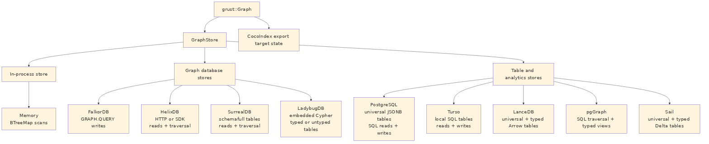

Backends share the same input model but not the same execution model:

Some backends are full read/write/traversal stores today. Others still focus on writes and administrative loading. That is normal for an early multi-backend project, and the trait makes the maturity boundary explicit.
grust-memory is the deterministic local backend. It
stores nodes in a BTreeMap<NodeId, Node> and stores
edges by source, label, destination, and optional explicit edge ID. That
means structural edges still behave deterministically, while id-bearing
parallel edges between the same endpoints can coexist. Reads and
traversals scan those maps. It is the best backend for tests, examples,
and local workflows that need no external service. When a
GraphSchema is applied, the memory backend validates writes
against it, which makes it a useful conformance harness for typed
storage behavior before a database enters the picture.
For repeated language reads, indexed_snapshot() returns
a shared immutable TypedGraphIndex. The first call after a
write clones the graph and builds typed incoming/outgoing adjacency;
later calls reuse it, including through cloned store handles. Every
write attempt invalidates the cache, while snapshots already returned
remain unchanged. Construction holds the store’s read lock and therefore
delays writers. Ordinary GraphStore reads and traversals
keep their map-based behavior; indexed Cypher entrypoints are a separate
choice.
use grust::prelude::*;
# async fn demo(graph: Graph) -> grust::Result<()> {
let store = MemoryGraphStore::new();
store.put_graph(&graph).await?;
let people = store
.traverse(
Traversal::from_node("talk:rust-graph-api")
.out("PRESENTED_BY")
.to("Person"),
)
.await?;
# Ok(())
# }grust-lancedb treats LanceDB first as a durable
Arrow-native table store. It uses two tables, one for nodes and one for
edges. Nodes are keyed by id. Edges are keyed by an
explicit edge id when present, or by a deterministic
from + label + to key otherwise. That fallback key is
shared with other tabular/export backends through
grust-core::edge_key, so structural edge identity does not
drift across implementations. Writes use LanceDB
merge_insert, and traversal performs hop-by-hop table
queries. When a hop fans out to multiple target nodes, the backend reads
those target nodes with get_nodes instead of issuing one
node query per edge. Property-start traversal filters by label in
LanceDB, then compares decoded Grust properties exactly so nested JSON
or serialized fragments cannot produce false positives. Before
persisting either an explicit or structural edge key, LanceDB calls the
checked identity path and rejects U+001F in the source ID, label, target
ID, or explicit ID. CocoIndex, LadybugDB, Sail, and Cypher
capture/refetch use the same guard, and mixed explicit/idless
comparisons also require the same structural owner instead of trusting a
key-shaped string alone. Ladybug’s managed metadata index reserves the
same delimiter, so its adapter rejects U+001F in node IDs before a user
record can alias a table marker.
Schema object identity is checked separately. The shared
validate_physical_identifier_claims helper lets FalkorDB,
Helix, LadybugDB, LanceDB, and Sail reject lossy-name collisions and
exact duplicate declarations within each native namespace before schema
or write operations are emitted.
This backend is a natural home for later vector-search extensions.
The core GraphStore trait should stay graph-focused;
LanceDB-specific nearest-neighbor search can live in an extension trait
without leaking into every backend.
With GraphSchema, LanceDB also creates typed Arrow
tables per node and edge label. The universal grust_nodes
and grust_edges tables remain the portable read/traversal
surface, while schema-labeled rows are mirrored into tables such as
grust_node_person or grust_edge_presents with
typed columns for declared fields. That gives analytical consumers and
future vector extensions a native columnar surface without giving up the
backend-neutral graph model.
grust-ladybug embeds LadybugDB directly through the Rust
lbug 0.20.2 crate. It is the durable local graph-database
backend: no Docker service, no HTTP bridge, and no separate daemon. The
store opens either an in-memory Ladybug database or an on-disk Ladybug
directory and creates Grust-managed Ladybug node and relationship tables
from graph labels.
Ladybug can be used for typed or untyped property graphs, and the
Grust backend now exposes that distinction directly. The default
LadybugGraphMode::Untyped accepts ordinary Grust graphs and
creates the needed Ladybug node and relationship tables from graph
labels and endpoint labels on write. That mode matches Grust’s raw
Graph, JSON, YAML, and XML loading path, where labels and
properties are data owned by the application.
LadybugGraphMode::Typed requires
apply_schema or put_typed_graph before writes.
In that mode the backend creates the declared Ladybug tables up front,
does not create undeclared tables during writes, and validates later
writes against the applied GraphSchema. Reads reconstruct
Grust Node and Edge values from the managed
tables, while traversal evaluates the portable Grust traversal IR by
walking Ladybug relationship tables and reading target nodes through the
same GraphStore contract.
Ladybug’s managed metadata index uses U+001F to frame table markers
and node entries. The adapter therefore rejects that delimiter in node
IDs before any mutation; this is stricter than the backend-neutral
NodeId type and is part of the Ladybug storage
contract.
The internal crate’s arrow feature also exposes
Ladybug’s embedded Arrow table path through Arrow IPC streams. A
workspace caller can register IPC node tables, relationship tables, and
CSR relationship tables directly with Ladybug, then query them with
Ladybug Cypher and receive result chunks back as Arrow IPC. The public
boundary is IPC bytes rather than a Rust RecordBatch type,
so callers do not have to match Ladybug’s internal Arrow crate version
exactly.
The first implementation stores Grust properties as JSON text for portable round trips. Later schema lowering can add typed Ladybug columns, full-text indexes, vector indexes, and direct graph-RAG extension traits without changing the core graph model.
grust-postgres stores the source of truth in ordinary
PostgreSQL tables:
grust_nodes(id text primary key, label text not null, props jsonb not null)
grust_edges(id text, from_id text not null, to_id text not null,
label text not null, props jsonb not null)The generic backend creates tables and indexes with ordinary
PostgreSQL DDL. It does not require PostgreSQL extensions, so the same
PostgresGraphStore can target local PostgreSQL, Neon, or
another managed PostgreSQL-compatible service. Reads use SQL against the
universal tables. Traversal is lowered to SQL joins over those tables.
Mutation batches are wrapped in PostgreSQL transactions.
The shared connection is serialized across every explicit
transaction. A recovery marker is set before BEGIN and
cleared only after PostgreSQL acknowledges COMMIT or
ROLLBACK; if cancellation drops a future mid-flight, the
next serialized caller rolls back the uncertain transaction before doing
new work. The public raw PostgresGraphStore::execute
surface is deliberately autocommit-only. Its lexical guard rejects
transaction-control statements in a batch while ignoring lookalike words
inside strings, identifiers, dollar-quoted bodies, and comments.
PostgreSQL PGQ forwards through the same contract.
Schema application adds typed label views and expression indexes. For
example, a Person node schema with
name: String and age: Int can produce a
grust_node_person view over the universal node table, with
age exposed as a bigint expression. This is a
deliberately incremental typed-storage path: PostgreSQL keeps the
flexible JSONB source of truth while callers that know the schema get
typed SQL surfaces.
grust-pggraph is now the pgGraph extension layer over
that same shared PostgreSQL implementation. It bootstraps the
graph extension, registers the universal tables, and can
optionally build the pgGraph projection for graph-index experiments
without forking the storage and traversal code.
grust-postgres-pgq targets PostgreSQL 19’s native
SQL/PGQ support. It uses the same universal tables as the durable
storage layout, creates a native PROPERTY GRAPH over them,
and executes bounded traversal through GRAPH_TABLE. That
keeps writes, reads, schema views, and mutation batches on the proven
PostgreSQL backend while letting traversal exercise PostgreSQL’s
standard property-graph query engine.
The reusable SQL boundary lives in grust-sql-core. It
owns the parts that are really common across row-store SQL graph
backends: universal table DDL, reads, bounded traversal joins, mutation
framing, schema views, expression indexes, identifier quoting, and
literal escaping. Dialects keep the pieces that affect correctness or
efficiency. PostgreSQL keeps JSONB predicates, ON CONFLICT,
CREATE OR REPLACE VIEW, transaction text, and lateral joins
for undirected steps. Turso keeps JSON text, json_extract,
json_patch, SQLite-compatible views, and a derived-table
undirected join shape. Sail does not use this SQL core because its SQL
path runs through Spark Connect, Arrow IPC staging, and distributed
Spark SQL rather than a direct row-store connection.
Recursive walk pushdown no longer stores raw node IDs between sentinel delimiters. PostgreSQL, Spark SQL, and the generic SQLite dialect encode IDs as hexadecimal, delimiter-free tokens before constructing visited sets. A dialect without both recursive-CTE support and an encoding hook declines variable-path or shortest-walk pushdown and preserves correctness through fallback.
GraphSqlDialect::max_identifier_bytes lets a dialect
declare a limit for generated schema identifiers. PostgreSQL reports its
63-byte ceiling: typed node/edge view and property-index names at the
limit remain valid, while longer names fail with
GrustError::Schema before the server can silently truncate
them into an ambiguous or colliding identifier. Dialects that retain the
default None keep their existing behavior.
grust-turso uses the Turso Rust SDK directly. The
default connection path opens a local in-process Turso database:
# use grust::prelude::*;
# async fn open() -> grust::Result<()> {
let store = TursoGraphStore::connect(TursoConfig {
path: "data/grust.db".to_string(),
table_prefix: "grust".to_string(),
batch_size: 500,
journal_mode: TursoJournalMode::Wal,
})
.await?;
# Ok(())
# }The storage layout mirrors the universal table shape used by the PostgreSQL backend, but uses SQLite-compatible types and JSON text properties:
grust_nodes(id text primary key, label text not null, props text not null)
grust_edges(id text, from_id text not null, to_id text not null,
label text not null, props text not null)Reads and traversal use ordinary SQL over the local Turso connection.
Schema application creates label-specific SQL views and expression
indexes using json_extract. Mutation batches are wrapped in
a Turso transaction.
The journal_mode option selects the concurrency model.
The default Wal is Turso’s single-writer write-ahead log.
Selecting Mvcc enables Turso’s multi-version concurrency
control (PRAGMA journal_mode = mvcc, a database-header mode
applied to a fresh database); data writes then run inside
BEGIN CONCURRENT transactions with bounded conflict retry,
so concurrent writers make progress.
With the turso-sync facade feature, callers can
construct a synced store from a local path, remote URL, and optional
auth token. The GraphStore API continues to operate on the
local SQL connection; callers decide when to call the store’s
push and pull helpers.
querygraph-memory is a concrete application of the Grust
backend contract. It implements TypeSec’s synchronous
MemoryStore interface over a compatible Grust mutation
backend without moving authority or plaintext handling into the storage
layer:
pub struct GraphStoreMemoryStore<G: GraphMutationStore> { /* ... */ }
use querygraph_memory::TursoMemoryStore;
let store = TursoMemoryStore::open("data/querygraph-memory.db")?;GraphStoreMemoryStore<G> is the generic adapter
for an already-initialized GraphMutationStore. The
production-oriented v1 alias, TursoMemoryStore, binds that
adapter to TursoGraphStore.
TursoMemoryStore::open(path) creates missing parent
directories, opens a file-backed local database with the stable
querygraph_memory table prefix, and runs Grust’s bootstrap
before returning. open_with_config is the explicit form for
applications that need another table prefix, batch size, path, or
journal mode. A default TursoConfig still uses
:memory:, so durable callers must supply a file path.
The adapter projects memory into a small property graph:
(:MemoryRecord {record: <opaque JSON>, space: ...})
-[:MENTIONS]->(:MemoryEntity {name, kind})
(:MemoryEntity)-[:RELATES]->(:MemoryRelation {rel, fact_id})
-[:RELATES]->(:MemoryEntity)Each MemoryRelation is an assertion, not merely an
endpoint pair. Its node ID is a SHA-256 identity over length-prefixed
source, relationship name, target, and record ID components. Replaying
one record is stable, while two records that assert the same named
relation between the same entities retain separate lineage. Neighborhood
traversal follows the two-edge assertion shape and also reads the legacy
direct RELATES {rel, fact_id} representation so existing
durable stores remain compatible. Tombstone preflight first discovers
the record’s assertion nodes and any legacy fact edges, then submits
deletion of that discovered set with the record node as one mutation
batch. A transactional backend makes that deletion batch atomic, and
other records’ assertions survive. The discovery reads are not isolated
inside that transaction: callers must synchronize a tombstone with
concurrent links for the same record so a new assertion cannot appear
after discovery and escape the deletion batch.
The complete TypeSec StoredRecord is serialized into one
opaque JSON property and round-tripped whole. Grust does not open the
protected content. TypeSec’s MemoryVault remains the only
component that rehydrates it, verifies typed capabilities, applies a
recall clearance ceiling, excludes quarantined records, joins
sensitivity labels during consolidation, and emits audit evidence. That
separation is the security boundary: Grust supplies durable graph
mechanics; TypeSec decides which subject may learn what.
Queries push only memory-space equality into the graph as
Start::NodesByProperty. The other StoreQuery
dimensions—kind, time, label, entities, text, invalidation state, and
ordering—continue through TypeSec’s shared
StoreQuery::matches implementation. This is semantically
complete and conformance-tested, but it is deliberately not advertised
as full GQL pushdown. A neighborhood traversal may discover record
identifiers associated with global entity nodes across several spaces;
the vault rejects every record outside the authorized space before
content can be revealed. Tenant isolation in v1 is therefore
authorization at the vault boundary, not physical graph
partitioning.
Consolidation uses the mutation boundary rather than a special
memory-only transaction API. MemoryStore::apply_batch
converts its puts and invalidations into one GraphMutation
slice and calls apply_mutations once. Turso reports
transactional mutation atomicity, so superseding old records and
inserting the replacement commits as one unit. TypeSec performs the
SecLib label join before that batch reaches storage, which means a
replacement derived from a Sensitive source remains Sensitive after
closing and reopening the database. A generic backend that reports
OrderedNonAtomic remains usable for simpler operations but
cannot promise atomic consolidation.
The adapter also owns the sanctioned bridge between TypeSec’s
synchronous MemoryStore and Grust’s asynchronous
GraphStore. A dedicated current-thread Tokio runtime
carries I/O and time drivers. Calls made outside Tokio drive it
directly; calls made from an existing Tokio runtime execute on a scoped
thread. This keeps an MCP or HTTP service from nesting runtimes or
panicking, and lets the store shut down safely when dropped from
asynchronous application code.
Semantic ranking and cognition preserve the same boundary. The
reference VectorIndex<E: Embedder> is an in-process
cosine index. An Embedder declares whether it is local; a
remote embedder is never handed Sensitive or Secret text, and those
records remain available to ordinary authorized recall without
participating in remote vector ranking. Search returns candidate IDs,
with an optional bounded entity co-mention boost, but the vault still
performs the authorization and label checks. Reference deduplication,
contradiction, and importance analyzers likewise make no writes. They
consume already-recalled views and emit inert
ConsolidationPlan values that must return through the
capability-gated vault.
The governed cognition path extends that rule instead of bypassing
it. A CognitionRequest contains one TypeSec-authorized
input, its canonical binding, its optional vault-verified governed
source scope, the exact LakeCat snapshot and policy-narrowed projection,
the field mapping used by governed ingestion to derive the selected
memory records, a durable job identity, and either the deduplicate or
reconcile operation. The trusted host selects a fixed reference or
native Sail profile before protected input is loaded; public engine
implementations cannot report their own trusted identity. Both
asynchronous engines return a bound CognitionProposal,
never a store handle or direct write.
Every bound proposal uses TypeSec proposal schema version 4. That
wire contract identifies input_snapshot with the canonical
immutable snapshot digest, keeps the LakeCat grant digest as separate
binding evidence, and carries an explicit mutated or
no_change effect. Reference and Sail derive that effect
from the complete proposal: zero drafts and zero plan steps means
no-change; every nonempty plan is mutating. Earlier bound schema
versions fail closed; unbound schema version 1 remains only an inert
local planning value. This wire version is independent of the operation
algorithm version below.
Deduplicate and reconcile each own an explicit version-2 semantic contract. Reference and Sail profiles bind the same per-operation version because they must produce the same canonical plan. Crate, package, and build versions remain useful implementation metadata, but never substitute for the algorithm version in signed TypeDID authority. Previously signed version-1 or package-bound intents are deliberately incompatible and must be authorized again; no native profile silently upgrades their authority.
Live Sail does not re-read LakeCat rows or reinterpret the ingestion mapping. It derives and stages only authorized IDs, normalized text keys, contradiction prefix/tail keys, and validity timestamps under a collision-safe session view; it does not stage the raw text column. Planning has independent finite operation, abort, and cleanup deadlines, and cleanup is attempted after success, failure, timeout, or caller cancellation. The Spark client and cognition decoder reuse the same public 16 MiB Arrow IPC payload limit; the decoded protobuf message has one additional MiB of bounded envelope headroom. Normalized and contradiction keys remain content-derived rather than anonymized, so the Sail endpoint belongs inside the processing boundary authorized for that protected input. Arrow framing, schemas, declared rows, buffers, compressed expansion, result counts, and local reconciliation work are checked before Arrow result-array allocation and then rechecked against the complete result. The reference and Sail engines use the same deterministic planning functions, so input permutation and timestamp ties produce canonical output.
Durability is a separate storage capability.
GraphCommitStore combines exact node or absence
expectations, a mutation batch, an idempotency digest, and a backend
receipt in one transaction. Turso mints the receipt’s canonical UTC RFC
3339 timestamp at nanosecond precision immediately before inserting that
receipt into the same transaction. It is backend-issued
transaction-boundary evidence, not a wall-clock observation taken after
storage fsync, and recovery returns those exact persisted bytes or fails
closed on malformed time. The cognition scheduler stores only scoped
digests, issues bounded renewable bearer leases, persists only the
canonical proposal digest, and survives reopen. During application,
TypeSec supplies the opaque prepared commit; Grust atomically checks
source revisions, applies its exact memory operations and ID-only index
outbox, writes the audit record, persists the outcome, and completes the
job. A no-change token has empty operations, affected IDs, and outbox,
and retains the prior memory version, but the exact source guards, job,
audit, outcome, and guarded ledger still commit as one decision.
Recovery is read-only and cross-validates the job, audit, outcome,
authority scope, optional governed source scope, proposal, effect, and
backend receipt. Durable outcome schema version 3 requires TypeSec audit
schema version 2, which carries the same typed effect, distinct grant
and snapshot digests, and the trusted authority-revalidation and
preparation times. Audit and commit-envelope digests use version-3
domains so this evidence layout cannot be confused with either
predecessor. TypeSec owns scope selection and authoritative reload
checks; Grust preserves that evidence and atomically enforces the
prepared full-record preconditions. Tests exercise concurrent identical
decisions and commit-then-response loss and prove that retry plus reopen
retain exactly one job, audit record, outcome, guarded ledger, and the
exact mutation/outbox shape required by the effect.
The scheduler’s transitionedAt is a caller-supplied
logical transition time; for Completed it is explicitly the
TypeSec audit’s preparedAt. It is not a backend commit
timestamp. A completed job’s completionDigest is exactly
the canonical TypeSec prepared digest for either effect, never the
resulting memory version; this avoids collapsing no-change into an
unchanged memory version. Recovery checks durable schema versions before
deserialization, rejects incompatible historical outcome and audit
layouts, and requires affected IDs to retain TypeSec’s strict canonical
order. Authoritative committedAt evidence exists only in
the outcome and receipt, must be canonical RFC 3339, and cannot predate
preparation. Grust rejects malformed or regressive backend time on
initial return and recovery instead of substituting a timestamp from
another phase.
The scheduler and outbox APIs are storage primitives behind Marciana’s authenticated scheduler and trusted worker pool. A worker intentionally need not equal the submitter, which lets expired work move safely, but canonical owner strings and scoped job keys are not credentials. Once issued, lease and claim tokens are bearer credentials for worker transitions. Marciana must authorize acquisition and cancellation and keep those tokens confidential; only a freshly prepared opaque TypeSec commit can authorize memory mutation.
This is a native Grust, TypeSec, LakeCat, and Sail composition. Cognee supplied design inspiration only; no Cognee runtime, adapter, or storage dependency is present.
The durable proof still has explicit limits.
MemoryId::next() uses a process-local counter, so a
restarted ordinary writer can collide with persisted mem-N
identifiers; a hosted or multi-process service should mint
collision-resistant IDs at its boundary. VectorIndex is not
a persistent LanceDB ANN implementation, and memory predicates beyond
space are not fully pushed into GQL. Cognition job idempotency does not
replace durable TypeDID nonce replay protection shared across gateway
replicas. Finally, vault-level tenant checks, restart persistence, and
running-service conformance do not by themselves constitute a hosted
multi-tenant service with quotas, migrations, backups, deletion
propagation, and service-level objectives.
grust-sail connects to a Sail Spark Connect server over
gRPC. It stores graph data in Spark DataFrames backed by Delta tables.
SQL commands and reads are sent as Spark Connect SQL relation plans, and
read results are decoded from Arrow IPC streams.
Portable count projections may lower to SELECT 1 when no
named binding must be returned. Sail sends that row-presence marker as
an Arrow integer rather than a string. Grust decodes integer markers
alongside text columns, preserving one row per match for the shared Rust
projection; it does not mistake this path for a server-side aggregate.
This boundary is regression-tested for multiple result batches, nulls,
and empty results. Sail 0.7.1 cannot execute the generated recursive
walk CTE, so variable-length path reads use the shared reference
fallback. Benchmark evidence labels this as graph materialization plus
Rust execution, not native Sail path performance; downloaded-scale
admission may reject that materialization path.
Call SailGraphStore::close().await after a session’s
operations finish to release its remote temporary views and session
state. This consumes the Rust client and invalidates any other client
sharing that session ID; durable warehouse files are not deleted.
Ordinary Rust drop cannot perform this asynchronous cleanup. Bound the
close future if your application requires a deadline, and treat timeout
or failure as uncertain cleanup. A release acknowledgement alone does
not prove an interrupted query has stopped.
Connection establishment validates the client configuration. The
default SailWarehouse::ServerManaged policy does not set
spark.sql.warehouse.dir; Sail’s catalog and warehouse
configuration remain authoritative. Connection failures use a stable
message and do not render the configured endpoint or transport error
because either can disclose endpoint credentials or signed parameters.
The warehouse policy is safe across a remote client boundary and does
not silently select a new client-local persistence path. Co-located
development can opt into SailWarehouse::LocalSessionScoped,
which derives a path beneath the client’s temporary directory from the
session ID. Grust does not delete that directory; callers own cleanup,
and reusing the session ID reuses the path. Durable callers can use
SailWarehouse::ExplicitPath with a stable absolute path
visible to the server; Grust sets and reads that override back through
the same Spark Connect session. Reopening tables across sessions
additionally requires Sail to provide persistent catalog metadata. If
Sail’s unconfigured warehouse fallback is the relative
spark-warehouse path, the server needs an absolute setting
or the client must select one of the explicit Grust overrides before
creating managed Delta tables.
Bulk writes stage Arrow IPC batches as Spark Connect
LocalRelation temp views and then merge from those views.
That avoids building one giant SQL literal per row, keeps user values
out of SQL text, and gives long-running requests an operation id with
reattachment enabled. Query filters bind user values through Spark
Connect named arguments. Delete mutations stage their values as Arrow
temp views before running argument-free SQL commands, which avoids
string substitution while matching Sail’s current command-parameter
behavior. Traversal joins use globally unique node ids; source and
destination label columns may be empty for single-edge writes where the
full graph is not in scope.
Sail’s Arrow boundary is now public too. Applications can stage arbitrary Arrow IPC streams as session temp views and query them with Spark SQL, collect Spark SQL results as Arrow IPC chunks, or load Grust-shaped node and edge IPC streams through the normal graph write path. This gives Sail the same data-source role as Ladybug while keeping Sail’s internal Arrow 58 dependency separate from Ladybug’s Arrow 55 dependency. Staged views can be dropped through a validated, idempotent helper, allowing protected batch inputs to be cleaned up on success, execution failure, or an uncertain retry.
When a schema is applied, Sail creates typed Delta tables per node
and edge label and mirrors writes into them with
MERGE INTO. The universal Spark tables keep traversal
simple and portable; the typed tables make declared graph labels
available as ordinary Spark columns. Their declared names survive table
creation, while Delta constraints reject null structural node and edge
identities. Constraint-registry values likewise enter through staged
Arrow rather than SQL string interpolation.
Sail also has reusable graph analytics helpers over the persisted
generic tables. read_graph collects the generic
grust_nodes and grust_edges tables back into a
portable Grust Graph. in_degrees,
out_degrees, degrees, and
degree_pairs run Spark SQL over those same tables and
decode the Arrow results into small Rust row types. These helpers are
deliberately low-level: they expose common graph measurements without
making the backend-neutral GraphStore trait depend on
Spark-specific analytics.
The Sail crate now also publishes its generic table contract.
Constants name grust_nodes, grust_edges, and
the physical node and edge columns, including the persisted generic edge
edge_key and optional explicit edge id.
Projection helpers classify requested graph fields as physical columns
or JSON properties, map edge label to the stored
edge_type, and check when a typed Sail node or edge table
can satisfy a graph query directly. This keeps Sail-native graph
planning and GrustFrames-style distributed lowerings aligned with the
same backend layout that Grust writes.
The same contract layer exposes typed table descriptors derived from
GraphSchema and directional triplet SQL. The triplet
helpers join generic edges back to their source and destination nodes,
and can orient rows as outgoing, incoming, or undirected pairs. That is
the shared primitive needed by distributed triplet filters, motif
expansion, and aggregate-message style passes without making the
backend-neutral store trait depend on those higher level algorithms.
Writable Cypher is not a separate Sail persistence path. The portable
Cypher/GQL layer (see Cypher and GQL) owns parsing, semantics,
planning, and the read engine; for the bounded read subset it lowers the
MATCH/WHERE filter into Spark SQL while the
RETURN projection runs through the shared reference.
SailGraphStore executes resolved
GraphMutationPlans through
CypherMutationExecutor, so Cypher writes use the same
staged-Arrow, MERGE INTO, typed-Delta mirror, and delete
paths as ordinary Grust writes. The plan and report types are
backend-neutral — Memory, Sail, and Turso all execute them — while Sail
adds the SQL read pushdown and typed-table mirrors on top.
The FalkorDB backend writes through Redis GRAPH.QUERY
using Cypher-like MERGE statements. It batches nodes by
label path and edges by relationship type. Schema application creates
label/property indexes for declared node types. Configurable
identity-property names and generated labels, relationships, and
properties are validated before Cypher construction. Property names
retain their physical spelling through backtick quoting where FalkorDB
permits it; unsafe delimiters and normalized-name collisions within a
schema or complete graph load fail closed. The configured structural ID
wins over property-map data, and connection-pool/query failures do not
render the Redis URL or credentials.
The HelixDB backend has HTTP and SDK stores. Both support batched
writes, node reads, edge reads, and backend-neutral traversal through
Helix dynamic queries. Edge writes store Grust relationship metadata
(relationship, from_id, to_id,
and optional edge_id) so EdgeQuery can
reconstruct Grust edges from Helix relationship rows. Helix writes
preserve supported scalar and array properties instead of silently
dropping non-string values; unsupported JSON object properties return an
explicit error. The current schema hook validates that labels,
relationships, and fields can be safely lowered through the
dynamic-query path; backend-native schema-file generation can build on
that same GraphSchema contract later. Schema and graph
preflight also reject normalized relationship collisions and attempts to
declare or write the structural id/label and edge-metadata
fields. Both HTTP and SDK graph loads validate all chunks before
transport, and transport failures omit configured URLs and their
embedded credentials or query strings.
The SurrealDB backend also has HTTP and SDK stores. It can bootstrap,
clear, upsert nodes, relate edges, delete nodes and edges, read nodes
and edges, and execute traversal hop-by-hop through the
GraphStore contract. Applying a schema lowers node and edge
declarations to Surreal DEFINE TABLE and
DEFINE FIELD statements so the backend can run in
schemafull mode where the schema calls for it. Reads use configured
labels and relationships, plus ID-derived table names, to find records
across Surreal’s label-specific tables. Generic edge reads and node
deletes require SurrealConfig.relationships; when that list
is empty, the backend returns a configuration error instead of silently
scanning no relation tables. Explicit edge-label reads and deletes can
still target a known relation table directly. Traversal batches
target-node reads per step through get_nodes, avoiding a
serial node lookup for every edge in a fan-out. Mutation batches are
wrapped in SurrealDB transactions. Both transports push edge endpoint
filters to SurrealQL using meta::id(in) and
meta::id(out) with complete escaped logical IDs, then
retain the Rust postfilter. This avoids transferring unrelated relation
rows without guessing an endpoint table from its ID prefix. It is not a
claim that the server uses an index seek; live query-plan and
performance validation remain separate work. SurrealDB 3.2 identifiers
are quoted without lossy property-name rewriting. Every newly written
node stores its original, case-sensitive Grust label in the reserved
__grust_label field instead of reconstructing that label
from a normalized, lowercase physical table. Reads of older rows fall
back to the physical table label exposed as
__grust_physical_label. Record decoding separates the table
at the first colon and removes only a matching outer backtick pair,
preserving colon-bearing logical IDs such as City:4 without
a trailing backtick. Configuration, schema fields, normalized
node/relation table claims, reserved storage fields, and complete graph
batches validate before bootstrap or write I/O. Optional Grust edge IDs
are stored separately as edge_id; node id and
labels, relation in/out, and
internal metadata cannot be overwritten by user properties. HTTP and
WebSocket failures omit URL userinfo and query secrets.
grust-cocoindex is intentionally not an ordinary
GraphStore. CocoIndex is an incremental target-state
system, so the Grust integration exports a graph as serializable node
and relationship state:
let export = graph.to_cocoindex_export()?;
let graph = cocoindex_export_to_graph(export)?;The export uses Grust node IDs as target keys, converts properties to JSON, and requires edge endpoints to exist in the graph so relationship source and target labels can be emitted. The import path expects the same key shape, validates relationship endpoints against imported nodes, and preserves explicit relationship keys as Grust edge IDs.
Unit tests stay self-contained, but live backend tests are explicit. They are marked ignored in Cargo so a normal workspace test run does not accidentally depend on local services. When a live test is requested, however, it must reach the backend; it no longer returns early and pretends success when a server is missing.
The repository provides a launcher for those checks:
scripts/integration-test.sh doctor --profile docker --mode docker
scripts/integration-test.sh --profile docker --mode dockerThe Docker profile is the contributor path: it starts the Docker-backed services and runs local LanceDB and CocoIndex checks. The full maintainer profile is still available:
scripts/integration-test.sh --profile allThe launcher reads integration/backends.conf. In
auto mode it prefers already-running services, then
configured local source checkouts such as ~/src/sail,
~/src/SurrealDB, ~/src/FalkorDB, and
~/src/HelixDB, then Docker Compose where a service is
available. The repository-level docs/INTEGRATION.md guide
covers profiles, modes, Docker image pins, source-checkout
configuration, and CI strategy.
Krill 0.13.2 is a scoped registry patch: grust-cypher,
grust-sail, and the grust-graph facade move to
0.13.2. Surreal remains 0.13.1, while consumers naming any other
published Grust crate directly continue to use 0.13.0. Krill corrects
Sail integer row-marker decoding and recursive-path admission, and adds
explicit remote-session cleanup. It retains Crayfish’s endpoint-safe
connection errors and faithful Surreal logical identities, and inherits
Prawn’s dependency qualification: Redis client 1.6.0 and FalkorDB
service v4.20.4, SurrealDB Rust SDK and service 3.2.4 with reqwest
0.13.4, pgGraph service 1.2.0, tokio-postgres 0.7.18, and stable Turso
0.7.2. These are tested compatibility updates, not claims that every
adapter implements the portable Cypher executor.
LanceDB stays at 0.30.0: the attempted 0.38.0 default-feature local
build fails within upstream lancedb because
job.rs references the remote-only Error::Http
variant when remote is disabled. The unpublished Helix
adapter now targets exact helix-db 3.0.0: its SDK path uses
typed nested-AST QueryRequest builders and
Client::query(request) rather than
DynamicQueryRequest and dynamic_query. The
direct HTTP/v1 store remains separate and unchanged. Nineteen unit tests
pass, including SDK serialization and existing HTTP behavior. The
separate SDK/v2 Docker example run now has 264 passing observations
across baseline and adversarial queries, with a retained runtime audit.
Historical HTTP service evidence is not reused as proof of SDK/v2
compatibility. The repository’s benchmarks/lsqb/BACKENDS.md
records the full qualification matrix and live gate evidence.
The repository also carries a Docker-reproducible compatibility
workload in benchmarks/lsqb.
The unmodified upstream side pins Graph Data Council LSQB commit
242cb2fd31340ca688954cb94794d74c0d5b6f92, LadybugDB 0.19.0,
and a digest-pinned Python 3.12.11 container. It validates LSQB’s nine
count queries independently of Grust.
The adapted Grust side is rectangular across twelve declared backends: Memory, Turso, PostgreSQL, Ladybug, FalkorDB, SurrealDB, LanceDB, Sail, pgGraph, PostgreSQL PGQ, Helix, and CocoIndex. Baseline and adversarial suites each contain one cell per backend, yielding 24 count reports in a complete run even when a declared cell is unsupported, unavailable, or not applicable. For every backend, the baseline cell declares nine LSQB-derived queries and the adversarial cell declares 13 separately labeled count attacks. A distinct backend-neutral suite has 14 required policy rejections, so the adversari.al extension contains 27 attacks across two non-overlapping expectation models.
The executable additionally exposes distinct helix-sdk
and surreal-sdk network-client lanes, while the historical
twelve-backend launcher and receipts remain unchanged. Both Helix and
Surreal retain their direct HTTP lanes. Surreal’s separately published
Rust SDK/WebSocket example cohort passes 108 baseline and 156
adversarial observations, with two warm-ups and ten measured repetitions
per query in rotating order. It measures backend materialization plus
Rust reference execution, not native Surreal query-engine performance.
Load, worker setup, query, and recovery timings remain separate. Helix’s
SDK3 source-built /v2/query service also passes all 264
example observations under the same sampling protocol. Both SDK cohorts
are independently admitted on adversari.al/graph. Helix’s frozen bundles
retain client and server build receipts, recipes and logs alongside the
observations and runtime records. Neither a build guide nor a matching
image label alone establishes a result.
Reports name the measured execution class as
in-process-reference,
backend-native-aggregate,
backend-row-source-rust-projection,
backend-materialize-rust-reference, or
backend-neutral-policy. Each query ends as
pass, mismatch, unsupported,
unavailable, timeout, error, or
not_applicable; policy cases separately record pass/fail
and a stable rejection category. A capability or service gap remains
visible rather than becoming a fallback pass. Those execution classes
are not performance equivalent and their timings must not be
collapsed.
New matrix observations also record a worker-declared execution
plan: clause-pipeline,
count-factorized, sql-row-source,
sql-count, or backend-native. This is the
selected Grust route, not the database’s physical plan. It is retained
in incremental records, including timeouts. Historical observations
without it remain explicitly unknown; frozen Neo4j and upstream bundles
are not rewritten. Mixed plans do not form one timing distribution.
The 28-node, 72-edge sfexample graph is a conformance
and orchestration gate, not a backend ranking. Authenticated LSQB SF0.1
and SF0.3 downloads add larger tiers with sealed archive and
extracted-manifest identities. At those scales, the harness admits
in-process reference, backend row-source with disclosed Rust projection,
and backend-native aggregate execution, while whole-store
materialization plus the Rust reference is explicitly
unsupported. The manifest additionally binds a per-query,
per-execution-class logical-row bound: only exact cardinalities or
certified upper bounds at or below 1,000,000 are timed on downloaded
tiers for row-producing Rust plans. Larger or insufficient Rust-row
bounds are explicit unsupported outcomes without samples. A separate,
hash-bound registry admits proven indexed counts as
count-factorized with not-materialized Rust
rows; this describes the algorithm, not an empty query result or zero
memory usage. Native scalar aggregates remain a separate class. For the
pinned workload, Memory selects indexed counts for all 22 cases (q1–q9
and a1–a13); Turso and PostgreSQL select scalar SQL counts for q1, q4,
a1 and a7. Unproven shapes retain their existing routes and gates. All
22 example cases pass offline on Memory and embedded Turso, but these
checks do not qualify a performance run or a live PostgreSQL service.
Index construction is load work; parsing, semantic analysis, planning
and execution remain query-timed. The fourteen-case policy suite remains
fixed to sfexample. Sail, PostgreSQL PGQ, and Helix have no
default pinned service startup contract; their cells are
unavailable unless an operator explicitly qualifies a
digest-pinned, resource-limited external service.
This is a conformance and reproducibility microbenchmark, and LSQB is not an official LDBC benchmark. A complete Grust matrix requires a valid publication receipt; separate native Neo4j, source-built Sail, Helix SDK and Surreal SDK cohorts use immutable evidence bundles admitted by an independent site verifier. A bundle manifest’s hashes alone do not establish qualification. Unadmitted diagnostic and discovery runs are not publication evidence. The matrix receipt inventories one normalized watchdog record per cell, binding the configured hard limit and elapsed wall time to the child exit status and exact container ID, name, project, and service observed by the supervisor. Missing, timed-out, or cross-cell records are rejected.
These are not LDBC Benchmark Results.
The evidence home and canonical public presentation are at adversari.al/graph.